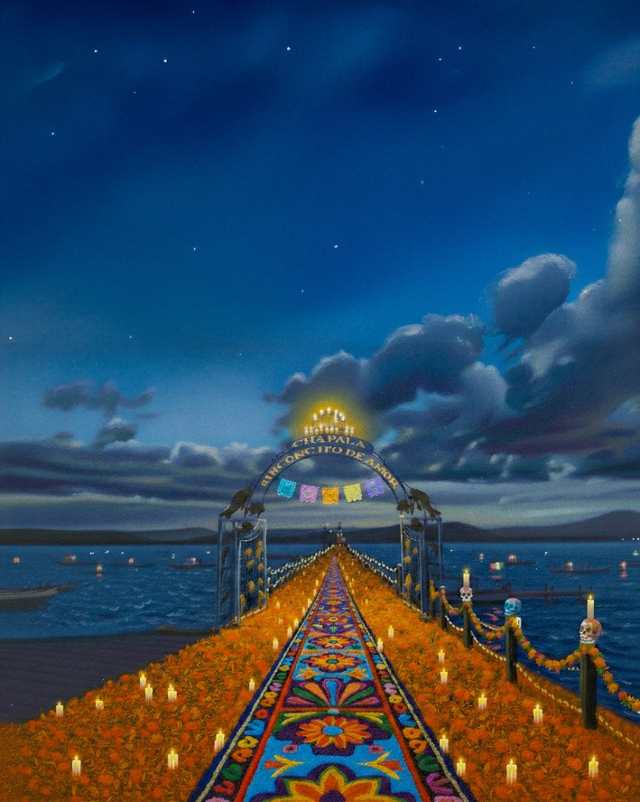
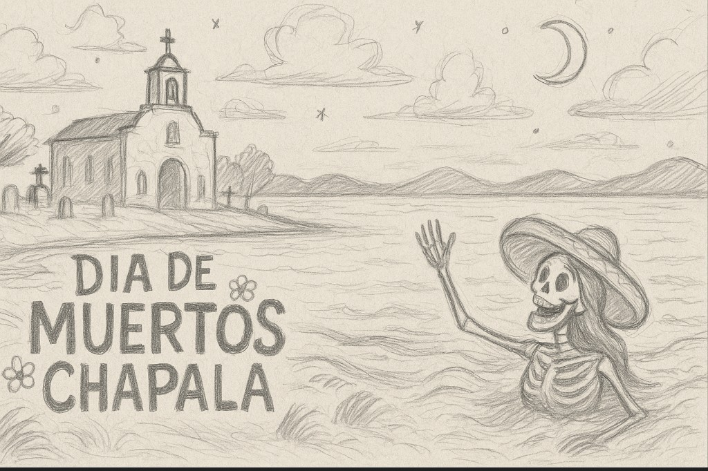
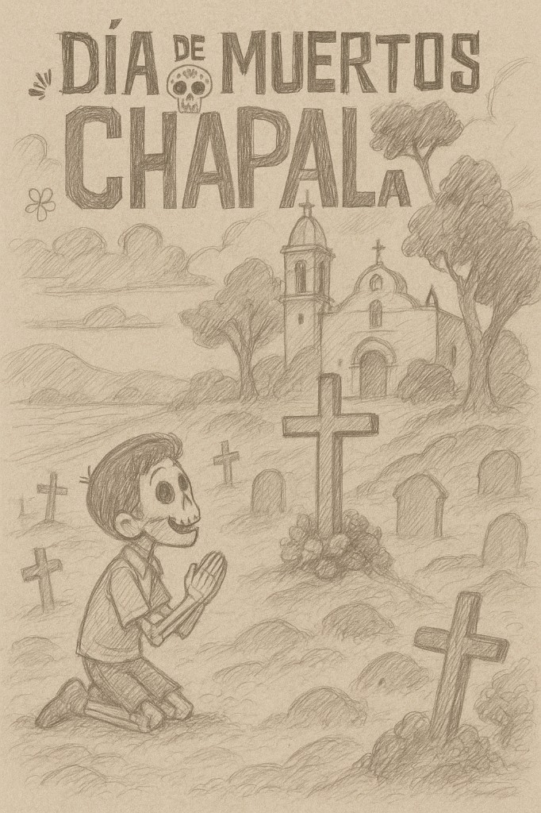
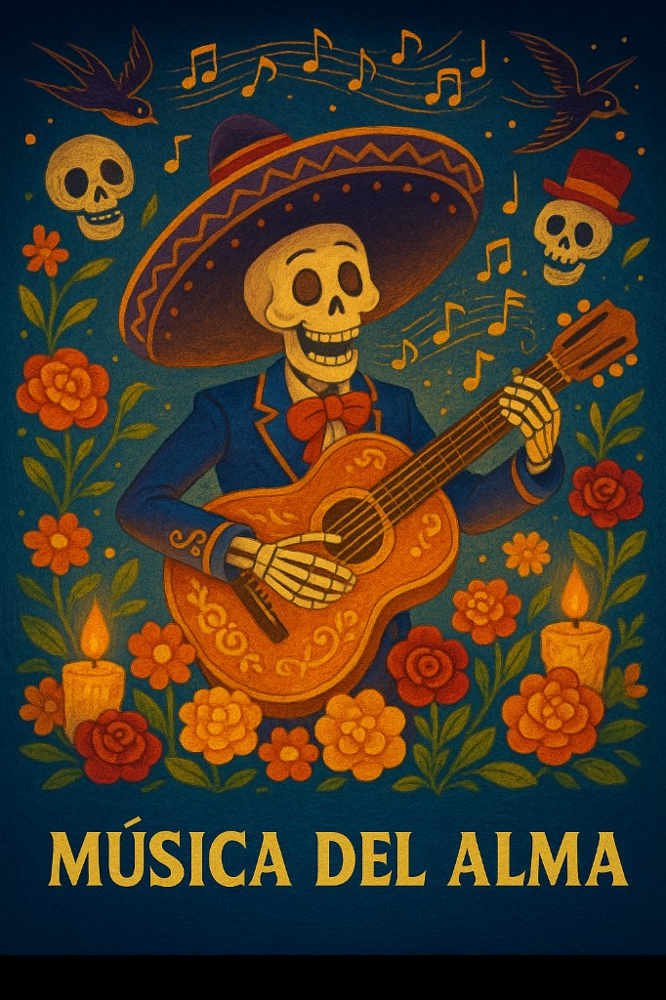
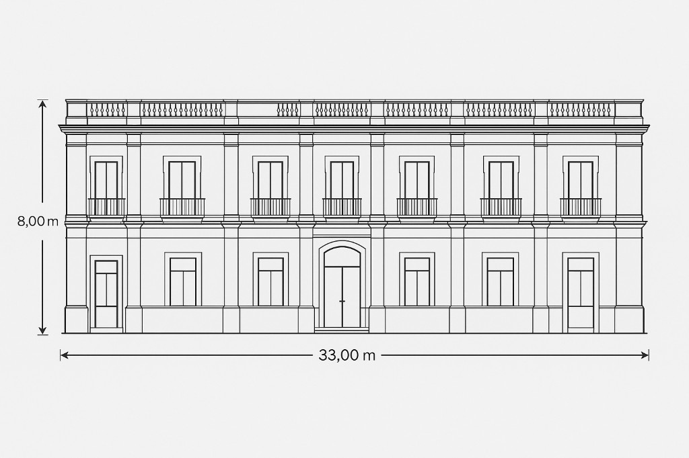
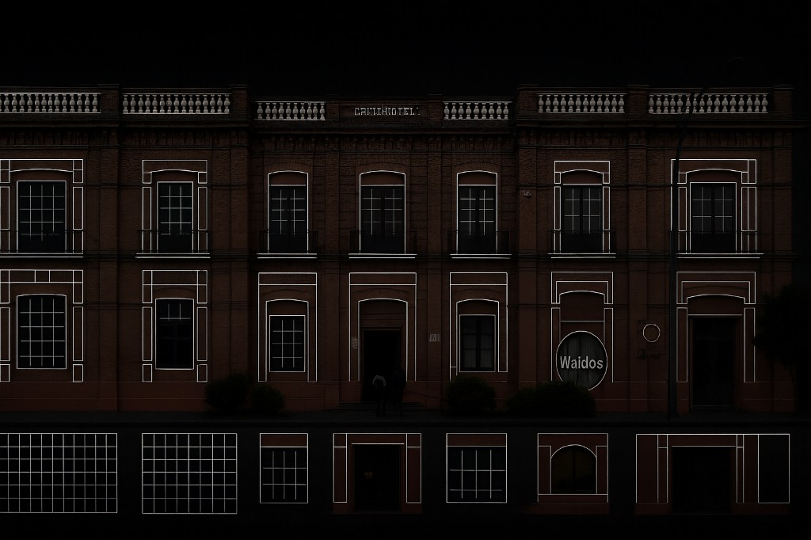

Whispers of the Lake
An immersive audiovisual installation that turned the historic building on the Chapala malecón into a living canvas — narrating the origins, myths and spirits that surround Lake Chapala.
A building that tells the lake's story.
The historic building on the shores of Lake Chapala became the screen for a site-specific projection-mapping piece rooted in local myth — the origins, legends and spirits that surround the lake.
Día de Muertos imagery, marigold paths and the pier known as Rinconcito de Amor set the tone: a nocturnal, ceremonial journey mapped precisely onto the facade for the community.
Rooted in Chapala's myth.
Concept art anchored the piece before production — the lake, the pier and the marigold-lined path of a Día de Muertos night.




Studying the facade before a single lumen.
AI tools and motion tests explored how the brick facade could dissolve, liquefy and rebuild itself — and how neon wireframes could trace its architecture.


How it was built.
Concept & story
Researching the myths and spirits of Lake Chapala and shaping a nocturnal, Día de Muertos narrative for the facade.
Facade study & pre-viz
Using AI tools to test facade transformations — dissolving, liquefying and rebuilding the brickwork, plus neon wireframe passes.
Content production
Modelling and animating the mapped content in Blender and After Effects, matched to the real geometry of the building.
Real-time & spatial audio
Driving playback and cues in TouchDesigner and pairing the visuals with a spatial audio score.
On-site calibration & show
High-lumen projectors warped precisely to the architecture, calibrated on site for a live show on the malecón.
The stack behind the mapping.
Mapped onto the building.
Documentation from the night — the content projected and calibrated across the facade.
A living facade on the lake.
Made by Andata Lab.
- Studio
- Andata Lab
- Disciplines
- Projection mapping · Cultural art
- Engineering
- Blender · After Effects · TouchDesigner
Have a facade that should tell a story?
We design and produce projection mapping and immersive experiences for heritage spaces, cities and cultural events.
Start a project →